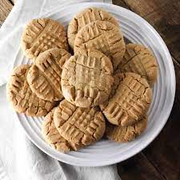

Peanut Butter Cookies Recipe

Recipe Description
You'll love these ULTRA-easy peanut butter cookies. They're full of peanut butter flavor and have the perfect
balance of salty and sweet with a wonderfully soft, melt in your mouth texture. This cookie is a classic for a
reason!
Ingredients
- 1 cup unsalted butter
- 1 cup crunchy peanut butter
- 1 cup white sugar
- 1 cup packed brown sugar
- 2 large eggs
- 2½ cups all-purpose flour
- 1 teaspoon baking powder
- ½ teaspoon salt
- 1½ teaspoons baking soda
Steps
- Cream butter, peanut butter, and sugars together in a bowl; beat in eggs.
- In a separate bowl, sift flour, baking powder, baking soda, and salt; stir into butter mixture. Put dough in
refrigerator for 1 hour.
- Roll dough into 1 inch balls and put on baking sheets. Flatten each ball with a fork, making a crisscross
pattern. Bake in a preheated 375 degrees F oven for about 10 minutes or until cookies begin to brown.
Return to homepage